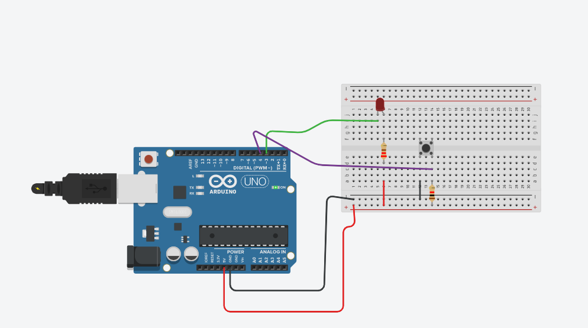
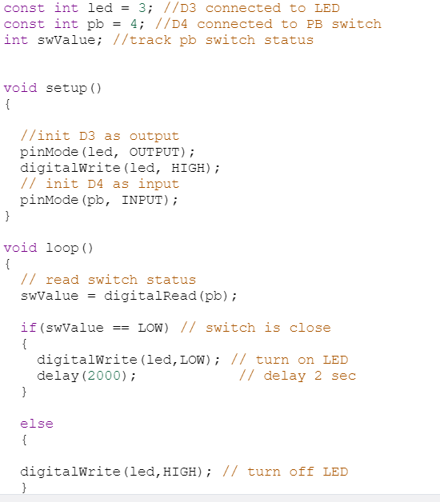
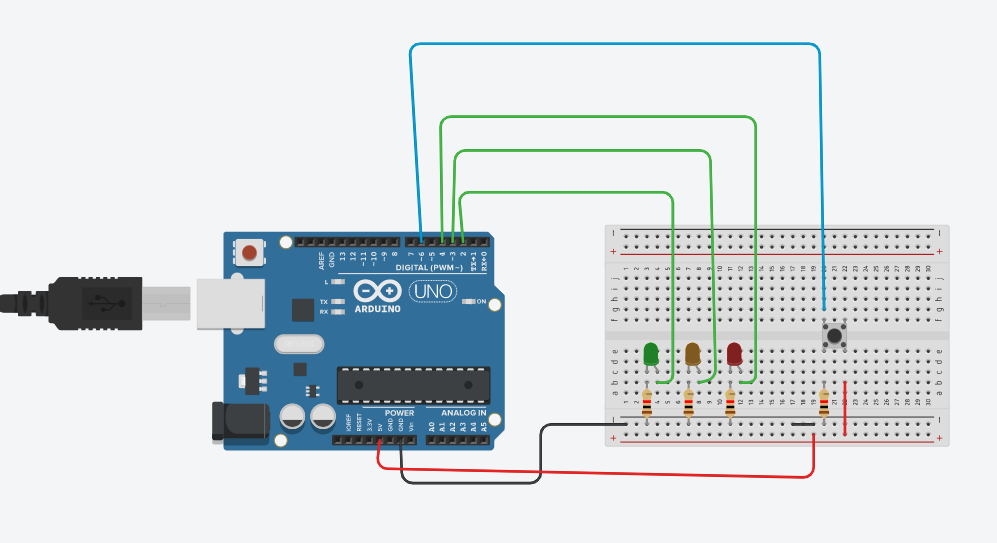
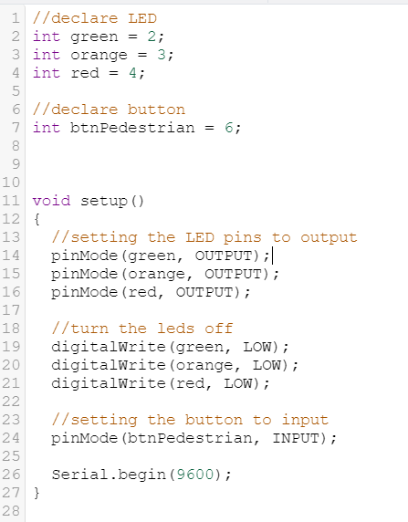
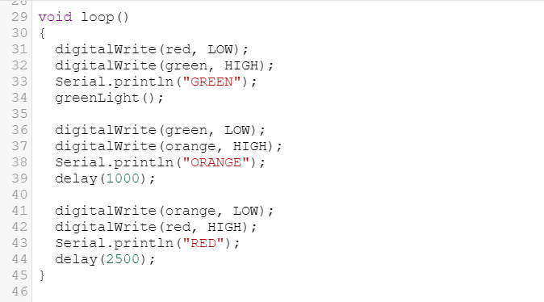
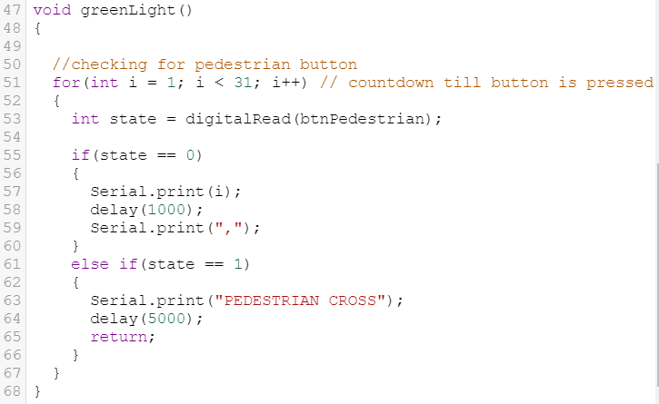

Embedded Programming

One of the things I have learned in Embedded Programming is learning Arguino. It is very interesting topic which makes you to do anything with your design. I used Tinkercad develop my design and program it.
Arduino
Arduino is a system comprises of Software and Software tools such as IDE(Integrated Development System). Arduino programming language(C++ like) based on Wiring. For Hardware, we uses ATMel processor board. Shield and sensors, actuators, peripherals.
Arduino is Inexpensive. It can be used cross platform(Mac, windows, linux). It is simple, clear programming environments. Arduino Uno is the most common microcontroller board to begin an Arduino projects. It uses a Atmel Atmega328P processor with seperate programmable interface using anther Atmel processor and USB.
Samples


This is one of my work that I made using the Arduino simulator. I have used the LED as an OUTPUT and the push button as INPUT.Firstly i declare the variable of the LED points to where it is connected. Always connect the ground wire(black) and volt 5 wire(red). I also declare the push button port. I also declare a switch value at the start. Inside the loop, I make the switch value the same value as the push button value. If the button is pressed, the switch value is LOW. If it is not pressed, then it will be HIGH.I can also put delay timer. If I want a fixed delay timer, I can declare it at the start so that I will not need to input the value for every loop.
Pedestrian Traffic light
One of the assignment the lecturers gave me is making a pedestrian traffic light. It is quite challenging for me as this is quite new for me. After much research and reference, I managed to do it. I will put pictures for future reference for the setup and code

Code



From the code, I first declare the LED which is green, orange and red. Then, I declare the button also. I declare the button and LED to their respective ports depending on yourself. In the setup function, I set the LED as OUTPUTS and the button as INPUT. I also code such that the LED will be off at the very start
In the loop function, I have put the loop that I want my traffic light to be on loop. I will start with green light switch on and off the rest of the LED. Then, the orange will be on and green will off. Then the red will be on and orange will go off.
While the green button is on, I have code such that it will create a countdown till 31. While this counting down is happening, when the button is , it will return back to the loop. Basically, I have made a function called greenLight like in the picture above which I have put while green light is on. This create the pedestrian traffic light.